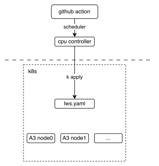
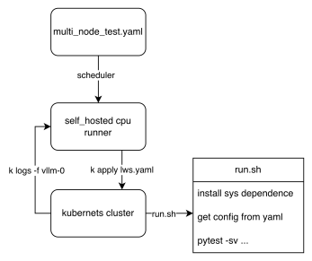

Multi Node Test
Multi-Node CI is designed to test distributed scenarios of very large models, eg: disaggregated_prefill multi DP across multi nodes and so on.
How it works
The following picture shows the basic deployment view of the multi-node CI mechanism. It shows how the GitHub action interacts with lws (a kind of kubernetes crd resource).

From the workflow perspective, we can see how the final test script is executed, The key point is that these two lws.yaml and run.sh, The former defines how our k8s cluster is pulled up, and the latter defines the entry script when the pod is started, Each node executes different logic according to the LWS_WORKER_INDEX environment variable, so that multiple nodes can form a distributed cluster to perform tasks.

How to contribute
Upload custom weights
If you need customized weights, for example, you quantized a w8a8 weight for DeepSeek-V3 and you want your weight to run on CI, uploading weights to ModelScope's vllm-ascend organization is welcome. If you do not have permission to upload, please contact @Potabk
Add config yaml
As the entrypoint script run.sh shows, a k8s pod startup means traversing all *.yaml files in the directory, reading and executing according to different configurations, so what we need to do is just add "yamls" like DeepSeek-V3.yaml.
Suppose you have 2 nodes running a 1P1D setup (1 Prefillers + 1 Decoder):
you may add a config file looks like:
test_name: "test DeepSeek-V3 disaggregated_prefill" # the model being tested model: "vllm-ascend/DeepSeek-V3-W8A8" # how large the cluster is num_nodes: 2 npu_per_node: 16 # All env vars you need should add it here env_common: VLLM_USE_MODELSCOPE: true OMP_PROC_BIND: false OMP_NUM_THREADS: 100 HCCL_BUFFSIZE: 1024 SERVER_PORT: 8080 disaggregated_prefill: enabled: true # node index(a list) which meet all the conditions: # - prefiller # - no headless(have api server) prefiller_host_index: [0] # node index(a list) which meet all the conditions: # - decoder decoder_host_index: [1] # Add each node's vllm serve cli command just like you run locally # Add each node's individual envs like follow deployment: - envs: # fill with envs like: <key>:<value> server_cmd: > vllm serve ... - envs: # fill with envs like: <key>:<value> server_cmd: > vllm serve ... benchmarks: perf: # fill with performance test kwargs acc: # fill with accuracy test kwargs
Add the case to nightly workflow
Currently, the multi-node test workflow is defined in the nightly_test_a3.yaml
multi-node-tests:
name: multi-node
if: always() && (github.event_name == 'schedule' || github.event_name == 'workflow_dispatch')
strategy:
fail-fast: false
max-parallel: 1
matrix:
test_config:
- name: multi-node-deepseek-pd
config_file_path: DeepSeek-V3.yaml
size: 2
- name: multi-node-qwen3-dp
config_file_path: Qwen3-235B-A22B.yaml
size: 2
- name: multi-node-qwenw8a8-2node
config_file_path: Qwen3-235B-W8A8.yaml
size: 2
- name: multi-node-qwenw8a8-2node-eplb
config_file_path: Qwen3-235B-W8A8-EPLB.yaml
size: 2
uses: ./.github/workflows/_e2e_nightly_multi_node.yaml
with:
soc_version: a3
runner: linux-aarch64-a3-0
image: 'swr.cn-southwest-2.myhuaweicloud.com/base_image/ascend-ci/vllm-ascend:nightly-a3'
replicas: 1
size: ${{ matrix.test_config.size }}
config_file_path: ${{ matrix.test_config.config_file_path }}
secrets:
KUBECONFIG_B64: ${{ secrets.KUBECONFIG_B64 }}
The matrix above defines all the parameters required to add a multi-machine use case. The parameters worth noting (if you are adding a new use case) are size and the path to the yaml configuration file. The former defines the number of nodes required for your use case, and the latter defines the path to the configuration file you have completed in step 2.
Run Multi-Node tests locally
1. Use kubernetes
This section assumes that you already have a Kubernetes NPU cluster environment locally. Then you can easily start our test with one click.
Step 1. Install LWS CRD resources
See https://lws.sigs.k8s.io/docs/installation/ Which can be used as a reference
Step 2. Deploy the following yaml file
lws.yamlas what you wantapiVersion: leaderworkerset.x-k8s.io/v1 kind: LeaderWorkerSet metadata: name: test-server namespace: vllm-project spec: replicas: 1 leaderWorkerTemplate: size: 2 restartPolicy: None leaderTemplate: metadata: labels: role: leader spec: containers: - name: vllm-leader imagePullPolicy: Always image: swr.cn-southwest-2.myhuaweicloud.com/base_image/ascend-ci/vllm-ascend:nightly-a3 env: - name: CONFIG_YAML_PATH value: DeepSeek-V3.yaml - name: WORKSPACE value: "/vllm-workspace" - name: FAIL_TAG value: FAIL_TAG command: - sh - -c - | bash /vllm-workspace/vllm-ascend/tests/e2e/nightly/multi_node/scripts/run.sh resources: limits: huawei.com/ascend-1980: 16 memory: 512Gi ephemeral-storage: 100Gi requests: huawei.com/ascend-1980: 16 memory: 512Gi ephemeral-storage: 100Gi cpu: 125 ports: - containerPort: 8080 # readinessProbe: # tcpSocket: # port: 8080 # initialDelaySeconds: 15 # periodSeconds: 10 volumeMounts: - mountPath: /root/.cache name: shared-volume - mountPath: /usr/local/Ascend/driver/tools name: driver-tools - mountPath: /dev/shm name: dshm volumes: - name: dshm emptyDir: medium: Memory sizeLimit: 15Gi - name: shared-volume persistentVolumeClaim: claimName: nv-action-vllm-benchmarks-v2 - name: driver-tools hostPath: path: /usr/local/Ascend/driver/tools workerTemplate: spec: containers: - name: vllm-worker imagePullPolicy: Always image: swr.cn-southwest-2.myhuaweicloud.com/base_image/ascend-ci/vllm-ascend:nightly-a3 env: - name: CONFIG_YAML_PATH value: DeepSeek-V3.yaml - name: WORKSPACE value: "/vllm-workspace" - name: FAIL_TAG value: FAIL_TAG command: - sh - -c - | bash /vllm-workspace/vllm-ascend/tests/e2e/nightly/multi_node/scripts/run.sh resources: limits: huawei.com/ascend-1980: 16 memory: 512Gi ephemeral-storage: 100Gi requests: huawei.com/ascend-1980: 16 ephemeral-storage: 100Gi cpu: 125 volumeMounts: - mountPath: /root/.cache name: shared-volume - mountPath: /usr/local/Ascend/driver/tools name: driver-tools - mountPath: /dev/shm name: dshm volumes: - name: dshm emptyDir: medium: Memory sizeLimit: 15Gi - name: shared-volume persistentVolumeClaim: claimName: nv-action-vllm-benchmarks-v2 - name: driver-tools hostPath: path: /usr/local/Ascend/driver/tools --- apiVersion: v1 kind: Service metadata: name: vllm-leader namespace: vllm-project spec: ports: - name: http port: 8080 protocol: TCP targetPort: 8080 selector: leaderworkerset.sigs.k8s.io/name: vllm role: leader type: ClusterIP
kubectl apply -f lws.yaml
Verify the status of the pods:
kubectl get pods -n vllm-project
Should get an output similar to this:
NAME READY STATUS RESTARTS AGE vllm-0 1/1 Running 0 2s vllm-0-1 1/1 Running 0 2s
Verify that the distributed inference works:
kubectl logs -f vllm-0 -n vllm-project
Should get something similar to this:
INFO 12-30 11:00:57 [__init__.py:43] Available plugins for group vllm.platform_plugins: INFO 12-30 11:00:57 [__init__.py:45] - ascend -> vllm_ascend:register INFO 12-30 11:00:57 [__init__.py:48] All plugins in this group will be loaded. Set `VLLM_PLUGINS` to control which plugins to load. INFO 12-30 11:00:57 [__init__.py:217] Platform plugin ascend is activated INFO 12-30 11:00:57 [importing.py:68] Triton not installed or not compatible; certain GPU-related functions will not be available. ================================================================================================== test session starts =================================================================================================== platform linux -- Python 3.11.13, pytest-8.4.2, pluggy-1.6.0 -- /usr/local/python3.11.13/bin/python3 cachedir: .pytest_cache rootdir: /vllm-workspace/vllm-ascend configfile: pyproject.toml plugins: cov-7.0.0, asyncio-1.3.0, mock-3.15.1, anyio-4.12.0 asyncio: mode=Mode.STRICT, debug=False, asyncio_default_fixture_loop_scope=None, asyncio_default_test_loop_scope=function collected 1 item tests/e2e/nightly/multi_node/scripts/test_multi_node.py::test_multi_node [2025-12-30 11:01:01] INFO multi_node_config.py:294: Loading config yaml: tests/e2e/nightly/multi_node/config/DeepSeek-V3.yaml [2025-12-30 11:01:01] INFO multi_node_config.py:348: Resolving cluster IPs via DNS... [2025-12-30 11:01:01] INFO multi_node_config.py:212: Node 0 envs: {'VLLM_USE_MODELSCOPE': 'True', 'OMP_PROC_BIND': 'False', 'OMP_NUM_THREADS': '100', 'HCCL_BUFFSIZE': '1024', 'SERVER_PORT': '8080', 'NUMEXPR_MAX_THREADS': '128', 'DISAGGREGATED_PREFILL_PROXY_SCRIPT': 'examples/disaggregated_prefill_v1/load_balance_proxy_server_example.py', 'HCCL_IF_IP': '10.0.0.102', 'HCCL_SOCKET_IFNAME': 'eth0', 'GLOO_SOCKET_IFNAME': 'eth0', 'TP_SOCKET_IFNAME': 'eth0', 'LOCAL_IP': '10.0.0.102', 'NIC_NAME': 'eth0', 'MASTER_IP': '10.0.0.102'} [2025-12-30 11:01:01] INFO multi_node_config.py:159: Launching proxy: python examples/disaggregated_prefill_v1/load_balance_proxy_server_example.py --host 10.0.0.102 --port 6000 --prefiller-hosts 10.0.0.102 --prefiller-ports 8080 --decoder-hosts 10.0.0.138 --decoder-ports 8080 [2025-12-30 11:01:01] INFO conftest.py:107: Starting server with command: vllm serve vllm-ascend/DeepSeek-V3-W8A8 --host 0.0.0.0 --port 8080 --data-parallel-size 2 --data-parallel-size-local 2 --tensor-parallel-size 8 --seed 1024 --enforce-eager --enable-expert-parallel --max-num-seqs 16 --max-model-len 8192 --max-num-batched-tokens 8192 --quantization ascend --trust-remote-code --no-enable-prefix-caching --gpu-memory-utilization 0.9 --kv-transfer-config {"kv_connector": "MooncakeConnectorV1", "kv_role": "kv_producer", "kv_port": "30000", "engine_id": "0", "kv_connector_extra_config": { "prefill": { "dp_size": 2, "tp_size": 8 }, "decode": { "dp_size": 2, "tp_size": 8 } } }
2. Test without kubernetes
Since our script is Kubernetes-friendly, we need to actively pass in some cluster information if you don't have a Kubernetes environment.
Step 1. Add cluster_hosts to config yamls
Modify on every cluster host, commands just like DeepSeek-V3.yaml after the configure item
num_nodes, for example:cluster_hosts: ["xxx.xxx.xxx.188", "xxx.xxx.xxx.212"]Step 2. Install develop environment
Install vllm-ascend develop packages on every cluster host
cd /vllm-workspace/vllm-ascend python3 -m pip install -r requirements-dev.txt
Install AISBench on the first host(leader node) in cluster_hosts
export AIS_BENCH_TAG="v3.1-20260330-master" export AIS_BENCH_URL="https://github.com/AISBench/benchmark.git" export BENCHMARK_HOME=/vllm-workspace/benchmark git clone -b ${AIS_BENCH_TAG} --depth 1 ${AIS_BENCH_URL} $BENCHMARK_HOME cd $BENCHMARK_HOME pip install -e . -r requirements/api.txt -r requirements/extra.txt
Step 3. Running test locally
Run the script on each node separately
export WORKSPACE=/vllm-workspace # Change it to your path locally export CONFIG_YAML_PATH="DeepSeek-V3.yaml" # Replace with the config case you added cd $WORKSPACE/vllm-ascend bash tests/e2e/nightly/multi_node/scripts/run.sh